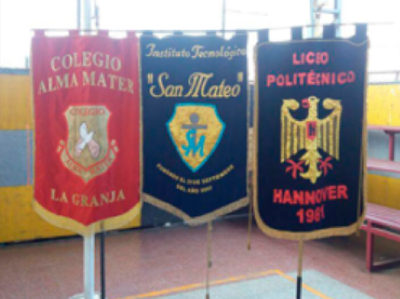
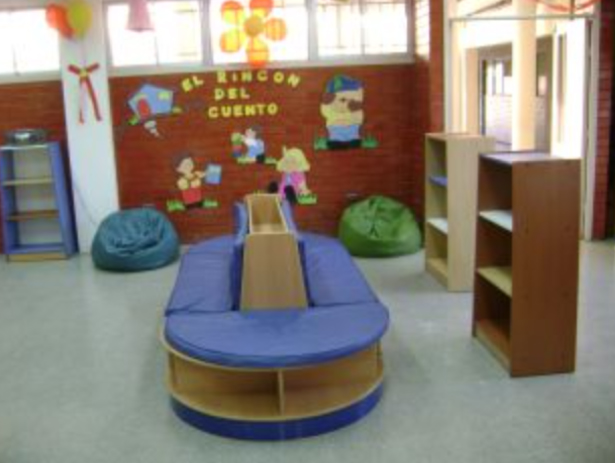

Historia
En el año 2006, la Sociedad Educacional Edutec Ltda. comienza a
administrar su tercer establecimiento el antes llamado Colegio Los Pensamientos.
En el año 2007 comienza a recibir alumnos con su nueva Administración y pasa a llamarse Colegio ALMA MATER.
Este año la matrícula es 670 alumnos y alumnas con un cuerpo de 30 profesores y
profesoras, contando además, con 2 docentes directivas y 1 docente técnico.

